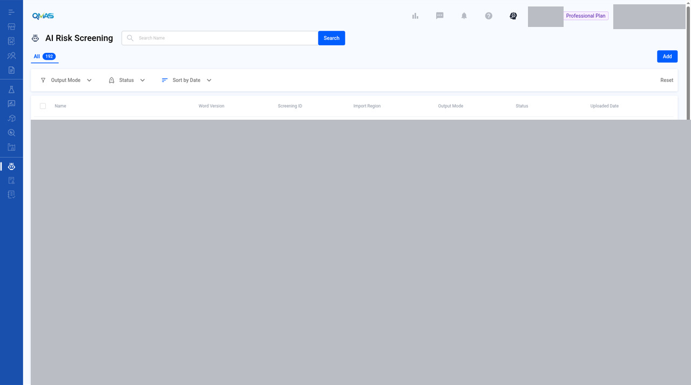
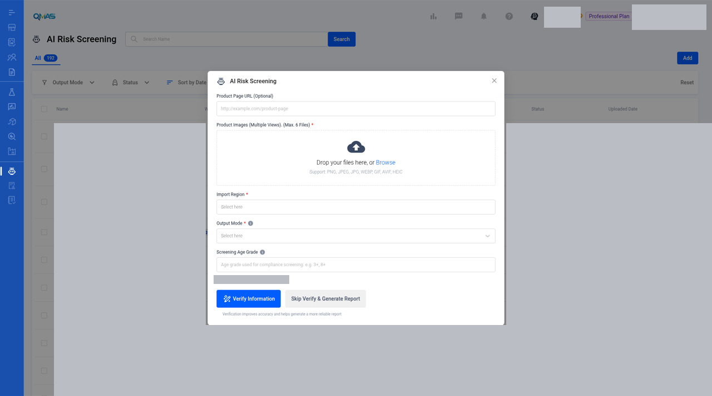

AI Insight — Run an AI Risk Screening
Upload product photos and let AI identify compliance risks and requirements for your import region. You get a compliance guideline report (PDF).
Screenshot slots: 2 reviewed and 2 pending privacy review.
Overview
- Open AI Risk Screening from the left menu (or from a product profile) and click Add.
- Upload up to 6 product photos and choose the Import Region and Output Mode.
- Click Verify Information (recommended) or Skip Verify & Generate Report.
- When the status is Completed, open the report from the list.
Step-by-step
1. Open AI Risk Screening
In the left menu, open AI Risk Screening. The list shows every screening with its import region, output mode (Full or Lite), status and upload date. Click Add.
The guide still files this module under AI Insight. The current screen title and address are AI Risk Screening (`/ai-risk-screening`).

You can also start from a product: open the product profile, choose AI Risk Screening in its left menu, then click Add.
Image pending privacy review
File name: 04-product-profile-entry.jpg
Reviewed replacement image not available yet. Follow the written steps above.
2. Fill in the screening
- Product Page URL (optional): a link to the product page.
- Product Images (required): up to 6 photos from different views. PNG, JPEG, JPG, WEBP, GIF, AVIF or HEIC.
- Import Region (required): where the product will be sold.
- Output Mode (required): Full or Lite report.
- Screening Age Grade (optional): the age grade to screen against, for example 3+ or 8+.
Available Token shows your balance. The number in this screenshot is redacted.
The reviewed pop-up is blank. Product Page URL is only the placeholder, no images are uploaded, and Import Region, Output Mode and Screening Age Grade are empty. Verify Information and Skip Verify & Generate Report are visible and were not used. No report was generated.

3. Verify and generate
Click Verify Information (recommended: verification improves accuracy and gives a more reliable report), or Skip Verify & Generate Report to go straight to the report.
The new screening appears in the list. When its status is Completed, the report is ready. Click the ⓘ icon to see the screening details.
Image pending privacy review
File name: 03-screening-details.jpg
Reviewed replacement image not available yet. Follow the written steps above.
Tips
FAQ
- How do I run an AI risk screening / AI Insight?
- Go to AI Risk Screening (https://qmas.icw.io/ai-risk-screening), click Add, upload product photos, choose Import Region and Output Mode, then click Verify Information or Skip Verify & Generate Report.
- Where do I see my token balance?
- In the AI Risk Screening pop-up, under Available Token.
- What is the difference between Full and Lite?
- They are the two report output modes. Choose one in Output Mode when you add a screening.
Help Center additions and remaining gaps
This section adds Help Center material and named gaps. It does not replace the steps above.
How these labels are used
- Source-documented — written in the original Help Center. The last-edited date is given. That does not by itself prove the current QMAS UI.
- Dev-verified — confirmed on qmas-dev.icw.io during guide work.
- Gap — named as missing or too thin. Not current behaviour until checked on dev.
Reviewed screenshots remain 56 of 98. Forty-two inventory slots are still pending. Six supplementary images are not part of the 98. Unreviewed screenshots were not copied.
Help Center finding
There is no Help Center article for AI Insight, AI Risk Screening, or AI Assessment.
Remaining gaps
- Completed report: open it, download the PDF, and what Full versus Lite actually contain.
- Verify Information intermediate UI. It is the recommended path and is not shown.
- Empty state. A wrong empty-state description is a filed bug. Wait for the fixed UI.
- Naming is still undecided: this guide title AI Insight, menu AI Risk Screening, Home AI Assessment and AI Insight.
- Token spend: the guide already warns. Do not run a screening unless asked.
Help Center reconciliation 2026-11-13 (HKT). Original Help Center not edited. No Dify upload.